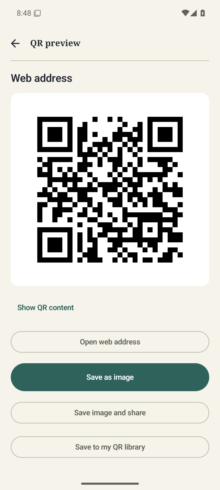
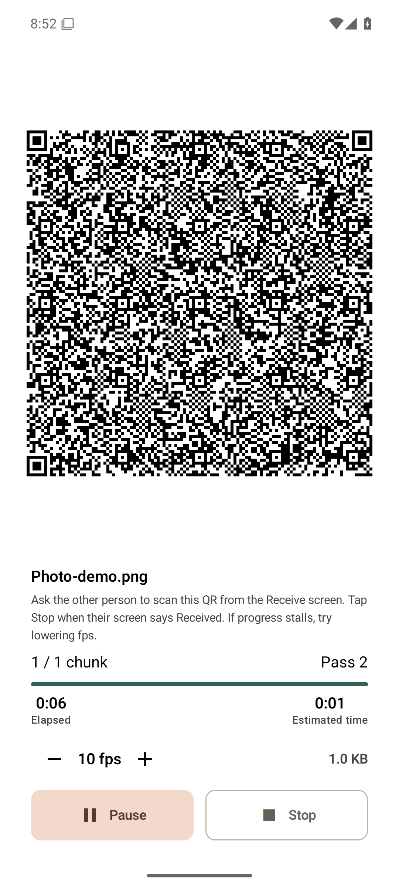
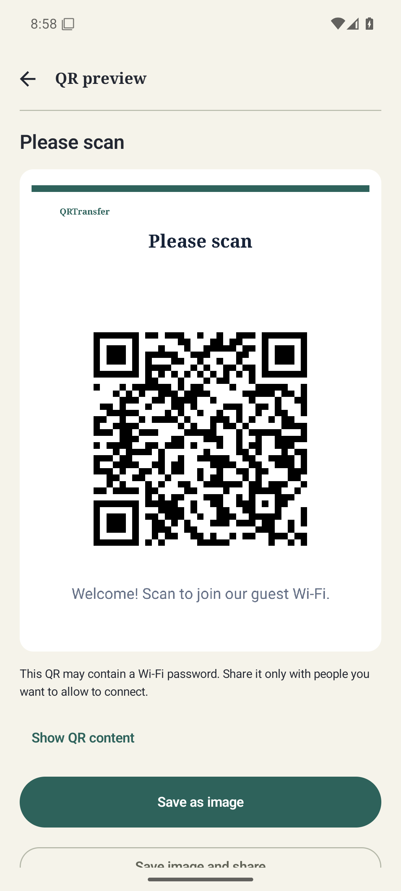

A useful QR toolkit for Android
Read the QR in your photos.
Share a photo through QR.
A screenshot on your phone. A photo to share nearby. A Wi-Fi card for your guests. QRTransfer keeps these small tasks together.
One photo, one useful code.
Open Tools → Read QR from photo → Select photo. Pick your saved image and review the decoded result. If it contains more than one QR code, choose one from the list.
Read the step-by-step guide
Share nearby through the screen.
QRTransfer turns photos and longer text into continuous QR. The other phone reads the sequence with its camera. Visual transfer works without internet or Bluetooth pairing.
Photos can be up to 3MB. Both phones need QRTransfer, and large transfers may take several minutes. This is useful when a small photo needs to cross between two nearby phones.
See the photo-sharing guide
A welcome card for guest Wi-Fi.
Enter your Wi-Fi details or import a Wi-Fi QR image, add a title and note, then save an image or print an A4 sign or six-up PDF. Keep and edit named QR codes in your local library.
Supports WPA/WPA2 Personal and open networks. Replace exported cards after changing the password. Exported images and PDFs are not encrypted.

All QR features are free. Contains ads. An optional one-time purchase removes ads; no subscription.